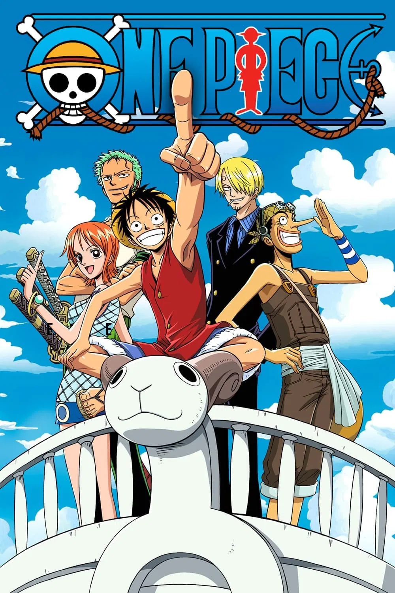
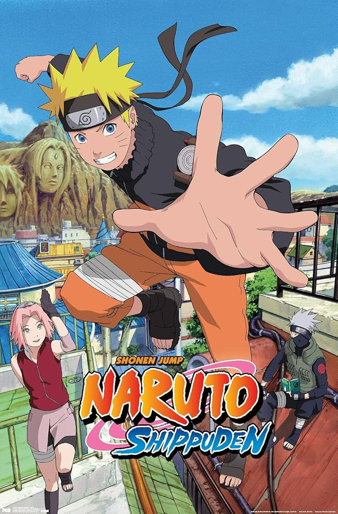
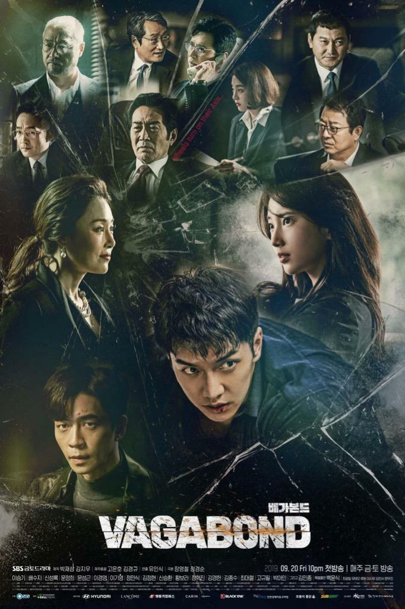

This page shows some of my favorite series and my ratings.
| Series | Country | My Rating |
|---|---|---|
| One Piece | Japan | 10/10 ⭐ |
| Friends | United States | 7/10 ⭐ |
| Buried Hearts | South Korea | 7/10 ⭐ |
| Naruto | Japan | 9/10 ⭐ |
| Vagabond | South Korea | 10/10 ⭐ |
| My Hero Academia | Japan | 7.5/10 ⭐ |
| Tunnel | South Korea | 8/10 ⭐ |
| Detective Conan | Japan | 8.5/10 ⭐ |
| The Four Seasons | Syria | 9/10 ⭐ |

One Piece follows the story of Monkey D. Luffy, a young boy who dreams of becoming the King of the Pirates. After eating a Devil Fruit that gives him rubber-like abilities, he sets out on a journey across the seas to find the legendary treasure known as "One Piece." Along the way, he builds a unique crew called the Straw Hat Pirates and faces powerful enemies while experiencing adventures filled with friendship, freedom, and determination.

Friends is a sitcom that follows the lives of six friends living in New York City as they navigate everyday life together. The show explores their relationships, funny situations, and challenges in work and love, all presented in a light and humorous way. It highlights the strength of friendship and support despite their different personalities and life struggles.

Buried Hearts is a Korean drama that blends romance and mystery, focusing on characters who carry painful secrets from their past that shape their present lives. The series explores complex relationships, emotional struggles, and how past decisions can deeply affect the future. It highlights themes of love, loss, and sacrifice in a touching and dramatic way.

Naruto follows the story of Naruto Uzumaki, a young ninja who dreams of becoming the Hokage, the strongest leader of his village. Rejected by others because of a powerful beast sealed inside him, Naruto strives to earn respect through hard work and determination. Along his journey, he forms strong friendships, faces dangerous enemies, and learns the true meaning of strength and bonds.

Vagabond is a Korean action-thriller that follows an ordinary man who uncovers a massive conspiracy after a mysterious plane crash. As he searches for the truth, he becomes entangled in a dangerous world of corruption, with the help of a secret agent. The series blends action, mystery, and political intrigue, showing how one person can challenge a powerful system in pursuit of justice.

My Hero Academia takes place in a world where most people have superpowers known as "Quirks." The story follows Izuku Midoriya, a boy born without powers who dreams of becoming a great hero. After a life-changing encounter with the greatest hero, he gets a chance to achieve his dream and enrolls in a hero academy, where he faces challenges and learns what it truly

Tunnel is a Korean drama that blends crime, mystery, and time travel, following a detective chasing a serial killer who suddenly travels from the past to the present through a mysterious tunnel. As he adapts to the modern world, he continues his investigation while facing major differences in technology and methods. The series delivers a suspenseful story full of twists, focusing on justice, time, and how the

Detective Conan follows Shinichi Kudo, a brilliant teenage detective who is turned into a child after a mysterious incident. Under the identity of Conan Edogawa, he continues solving complex cases in secret while trying to uncover the organization behind his transformation. The series combines mystery, suspense, and intelligence through a wide range of

The Four Seasons is a Syrian social drama that follows the life of a Damascene family and their intertwined relationships over time. The series portrays everyday life, family conflicts, and human relationships in a realistic and relatable way. It highlights themes of family bonding, love, and the challenges that arise between family